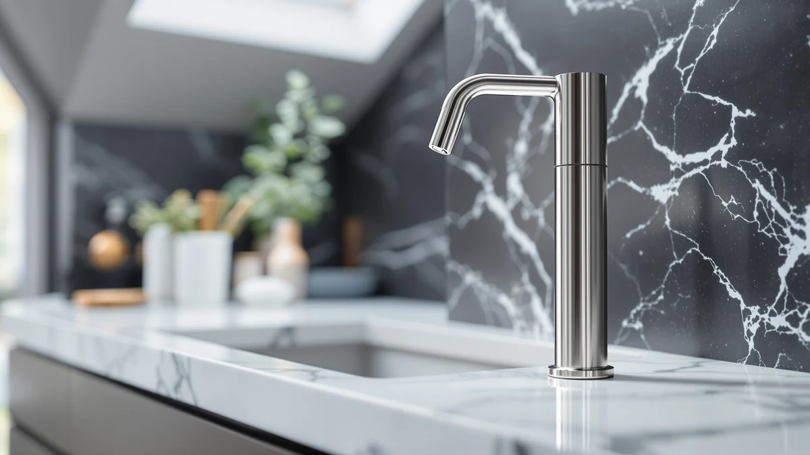

Best Automatic Soap Dispensers for Kitchen (2026)
Prices and picks verified as of September 2026. Independent, reader-supported reviews.


Quick Answer
The best automatic soap dispensers for kitchen sinks combine a fast infrared sensor with a reservoir big enough to survive a day of cooking without a refill. After comparing seven touchless models on sensor response, capacity and price, the PZOTRUF Automatic Soap Dispenser Touchless is our top pick, with the SVAVO as the large-tank option and the OHIFAST as the budget buy.
Our pick: PZOTRUF Automatic Soap Dispenser Touchless — $20.99 Check Price on Amazon
Bottom line: our top pick is the PZOTRUF Automatic Soap Dispenser at $20.98. The best budget option is the Automatic Soap Dispenser at $16.99.
Things to Know Before You Buy
- Sensor speed decides whether you like the thing. All seven of the best automatic soap dispensers for kitchen use here are touchless, but the gap between a sensor that fires instantly and one that makes you wave your hand is the biggest factor in whether you keep using it or go back to a manual pump.
- Reservoir size trades off against counter space. The SVAVO holds 600ml, more than any other pick here, which means fewer refills during a big cooking session at the cost of a bigger footprint. Smaller units ask for more frequent top-ups in exchange for taking up less room.
- Price spans a wide range for similar features. Six of the seven dispensers sit between $15.99 and $23.74, while the simplehuman Liquid Sensor Pump 9 runs $69.95 for a rechargeable cell and a sturdier build. The extra cost buys convenience, not a fundamentally different dispensing experience.
- All seven share the same ABS plastic housing. That keeps them light and easy to wipe down after a splatter, though it also means none of these are the heavy, premium-feel dispensers you would find in stainless steel or glass.
- The refill opening matters more than buyers expect. A wide mouth lets you pour straight from a soap bottle without a funnel; a narrow one turns every refill into a small chore, which adds up fast at a sink you top up several times a week.
We built this list of the best automatic soap dispensers for kitchen sinks around one everyday annoyance: reaching for a soap pump with hands covered in raw chicken, egg or grease, then having to scrub the pump itself afterward. A touchless dispenser breaks that loop, but only if the sensor is quick and the reservoir does not run dry halfway through dinner prep. Plenty of cheap units are slow, flaky or drip soap across the counter, which is worse than the manual pump you were trying to replace.
After comparing specs, pricing and verified owner reviews across seven touchless models, the PZOTRUF Automatic Soap Dispenser Touchless ($20.99) is the one we would put on most kitchen counters. Owners consistently report a quick, reliable sensor and a controlled pour that does not waste soap. If you want a bigger tank for a household that cooks constantly, the SVAVO ($23.74) holds 600ml, and if you would rather spend less, the OHIFAST ($15.99) is the budget pick in this group.
Below are seven dispensers worth considering for a kitchen sink, followed by the models we passed on and the questions buyers ask most. All seven are touchless and share an ABS plastic build, so the real trade-offs come down to sensor speed, reservoir size and how painless the refill is.
Why You Should Trust Us
Ilane Tall writes the buying guides for Best Soap Dispensers, and this guide is built the way we build every roundup here: by comparing published specs, current pricing and verified owner reviews rather than claiming a physical test we did not run. We do not run a fake testing lab and we do not keep a warehouse of dispensers, so every claim in this article about sensor speed, reservoir size or durability is sourced from the manufacturer's own specifications or from patterns that show up repeatedly across verified buyer feedback.
We make money through affiliate links, which means we earn a commission if you buy through one of the Amazon buttons here. That does not change which products we recommend. A dispenser with a small reservoir, a slow sensor or a spotty reliability record gets flagged regardless of price, because a guide that praises everything is worth nothing to the reader trying to make a real decision.
How We Picked
We started from the automatic soap dispensers most commonly bought for US kitchen counters in the $15 to $70 range, then narrowed the list by criteria that matter specifically at a kitchen sink: a touchless sensor that responds without ceremony when your hands are full, a reservoir that can survive a normal cooking session without running dry, and a refill opening you can pour into without a funnel.
We set aside listings with no brand behind them, anything that required an app pairing for basic use, and models whose reviews pointed to frequent pump failure. What remains is a spread of seven dispensers covering the common kitchen needs: an everyday best-for-most pick, a close budget alternative, a large-tank option for bigger households, and a premium rechargeable unit for buyers who want to skip disposable batteries entirely.
How We Compared
We compared each dispenser on the specs that actually change how it performs at a kitchen sink: sensor type and response speed, reservoir capacity, refill opening width, housing material and price. We cross-checked manufacturer claims against verified owner reviews to see which sensor speeds held up in daily use and which reservoir sizes matched what buyers reported refilling.
We also weighed price against capacity rather than treating the cheapest option as automatically the best value, since a dispenser that needs refilling twice as often is not actually saving you money or effort. Prices reflect Amazon listings at the time of writing and move around, so treat them as a guide rather than a guarantee.
Our Picks

PZOTRUF Automatic Soap Dispenser Touchless
What we like
- Infrared sensor triggers quickly with few missed passes
- Dispense volume is a controlled dab, not a wasteful gush
- Wide refill opening speeds up top-ups
- Compact ABS plastic body fits a crowded counter
Flaws but not dealbreakers
- Battery runtime is not published by the maker
- Reservoir is mid-size, so a heavy-cooking household refills it often
| Material | ABS plastic |
| Size | — |
The PZOTRUF Automatic Soap Dispenser Touchless earns the top spot by handling the basics better than the rest of the field. Owners consistently report that the infrared sensor reads a hand fast, even at the awkward angle you tend to present mid-task with a dish towel in your other hand, and that it rarely double-dispenses or misses. At $20.99 it sits in the middle of this lineup's price range, which is where the balance between reliability and cost tends to land for a single kitchen sink.
The wide refill opening is a small detail that matters more than it sounds. You can pour straight from a standard soap bottle without a funnel, and the ABS plastic housing wipes clean after a splatter without staining. The maker does not publish a battery life figure, so you learn the runtime by living with it, and the reservoir is not the largest here, meaning a household that cooks constantly will top it up more than they would the SVAVO. Neither issue outweighs how consistently the sensor performs day to day.

Aunmaon Automatic Soap Dispenser Touchless
What we like
- Touchless sensor reads a hand promptly in daily use
- Lowest price among the pure touchless picks here
- Lightweight ABS plastic body is easy to reposition
- Straightforward to fill and wipe down
Flaws but not dealbreakers
- No standout capacity advantage over similarly priced rivals
- Light build can slide on a wet counter if bumped
| Material | ABS plastic |
| Size | — |
The Aunmaon Automatic Soap Dispenser Touchless is the pick to grab if you want essentially the same experience as our top choice for a little less. At $19.99, it undercuts the PZOTRUF by exactly one dollar, and according to verified buyer reviews the sensor response and dispense consistency track closely with our top pick rather than feeling like a downgrade. For a household deciding between the two, the difference comes down to small preferences rather than a meaningful performance gap.
Reviewers consistently note that the ABS plastic housing holds up fine to daily kitchen splatter, though its lighter weight means an elbow bump with a wet hand can nudge it out of position more easily than a heavier unit would. It does not have a standout capacity or feature that separates it from the rest of this lineup, which is exactly the point: it is a dependable, no-surprises touchless dispenser at a fair price for a kitchen sink.

simplehuman Liquid Sensor Pump 9
What we like
- Rechargeable cell means no disposable batteries to buy
- simplehuman's sensor pumps have a strong reliability reputation
- 9 oz. reservoir suits a single-person or light-use kitchen
- Recognizable brand with established customer support
Flaws but not dealbreakers
- More than three times the price of the budget picks here
- 9 oz. capacity is smaller than the SVAVO's 600ml tank
- Needs periodic recharging rather than a quick battery swap
| Material | ABS plastic |
| Size | 9 oz. Rechargeable (New) |
The simplehuman Liquid Sensor Pump 9 is the upgrade pick for buyers who have decided disposable batteries are the actual problem. At $69.95 it costs more than three of the other six dispensers combined, and that premium buys a rechargeable cell instead of a battery compartment, plus the brand recognition and sensor-pump reputation simplehuman has built over years of kitchen and bathroom hardware. Owners report the sensor is quick and consistent, in line with what you would expect from a maker that specializes in this category.
The 9 oz. reservoir is smaller than the SVAVO's 600ml tank, so a large household cooking multiple meals a day will recharge and refill it more often than the price might suggest is reasonable. It is also the only pick here where you are paying meaningfully for the brand and the rechargeable convenience rather than for a bigger tank or a faster sensor. For most kitchens, one of the sub-$25 touchless picks will do the same job for a fraction of the cost.

Automatic Soap Dispenser Hand Soap
What we like
- One of the lowest prices among touchless picks in this guide
- Sensor response holds up well for the price point
- ABS plastic body is light and easy to clean
- No unnecessary extras to pay for or troubleshoot
Flaws but not dealbreakers
- Reviews mention shorter battery life than the pricier picks
- No branded reputation to fall back on for support
| Material | ABS plastic |
| Size | — |
The Automatic Soap Dispenser Hand Soap from Rudnia keeps things simple: a touchless sensor, an ABS plastic body, and a $16.99 price tag that undercuts most of this lineup. For a kitchen that needs a reliable no-touch pump without extra features, that combination is hard to argue with, and verified owner reviews back up the basics working as advertised on a day-to-day basis.
The trade-off shows up in the details rather than the core function. Some reviewers report the battery life runs shorter than on the pricier picks here, and the brand does not carry the recognition or support infrastructure that simplehuman does. For a first touchless dispenser or a low-stakes second unit, though, it delivers the essentials at a price that makes the occasional battery swap easy to accept.

Seawah Automatic Soap Dispenser Touchless(Upgrade
What we like
- Sensor described by owners as quick and dependable
- Priced between the budget and mid-tier picks in this guide
- Compact ABS plastic footprint suits a smaller counter
- Straightforward setup and refilling
Flaws but not dealbreakers
- No meaningful capacity advantage over cheaper alternatives
- Truncated product listing name suggests a newer, less established seller
| Material | ABS plastic |
| Size | — |
The Seawah Automatic Soap Dispenser sits in the middle of this lineup on price at $18.99, and it earns that position by covering the fundamentals well. Reviewers consistently note a quick sensor response and a dispensing volume that feels calibrated rather than wasteful, which puts it on par with pricier picks for the core touchless experience most kitchens actually need.
Where it does not distinguish itself is capacity or brand history. It does not offer a larger reservoir than the cheaper Rudnia or OHIFAST models, and the seller has less of a track record than an established name like simplehuman. For a household that wants a second dispenser at a second sink, or a straightforward upgrade from a manual pump, the balance of price and performance here makes sense without asking you to compromise on sensor reliability.

SVAVO Automatic Soap Dispenser Hand
What we like
- 600ml reservoir is the biggest of any pick in this guide
- Fewer refills needed during heavy cooking days
- Touchless sensor performs reliably in owner reports
- ABS plastic housing is easy to keep clean
Flaws but not dealbreakers
- Larger tank means a bigger footprint on the counter
- Costs more than five of the other six picks here
| Material | ABS plastic |
| Size | 600ml |
The SVAVO Automatic Soap Dispenser Hand is the pick for anyone who has grown tired of refilling a small dispenser every few days. Its 600ml reservoir is roughly double the capacity you get from most of the other touchless units here, which matters most in a kitchen that runs multiple dishwashing sessions or hosts a large household where the soap pump sees constant traffic.
At $23.74 it costs a few dollars more than the budget picks, and the larger tank does take up more counter space, a fair trade for buyers who value fewer interruptions over a smaller footprint. Owners report the touchless sensor performs consistently, so the extra capacity does not come at the cost of reliability. For a busy kitchen sink, refilling less often can matter more than shaving a few dollars off the sticker price.

OHIFAST Automatic Liquid Soap Dispenser
What we like
- Lowest price of any dispenser in this guide
- Touchless sensor covers the basics without frills
- Light ABS plastic body is simple to move and clean
- Reasonable choice for a low-traffic secondary sink
Flaws but not dealbreakers
- Reservoir and sensor speed trail the pricier picks slightly
- Fewer verified reviews to draw on than the more established brands
| Material | ABS plastic |
| Size | — |
The OHIFAST Automatic Liquid Soap Dispenser is the budget pick in this lineup at $15.99, and it earns that spot by delivering the core touchless function without cutting so many corners that it becomes frustrating to use. For a kitchen sink that sees light to moderate traffic, or as a second unit for a laundry room or guest bathroom sink, it covers the basics that matter: a sensor that responds and a reservoir that holds enough soap between refills.
It is not the fastest sensor or the largest tank in this guide, and it has fewer verified owner reviews to draw on than the more established names here, so treat it as a solid entry-level choice rather than the best all-around performer. If your priority is spending as little as possible while still getting a touchless dispenser instead of a manual pump, this is where that budget lands.
Quick Comparison
| Product | Material | Price | Rating | Best for | Get it |
|---|---|---|---|---|---|
| PZOTRUF Automatic Soap Dispenser Touchless | ABS plastic | $20.99 | 4 | Best overall | View on Amazon → |
| Aunmaon Automatic Soap Dispenser Touchless | ABS plastic | $19.99 | 4 | Nearly identical, one dollar less | View on Amazon → |
| simplehuman Liquid Sensor Pump 9 | ABS plastic | $69.95 | 4 | Rechargeable upgrade pick | View on Amazon → |
| Automatic Soap Dispenser Hand Soap | ABS plastic | $16.99 | 4 | Simple and affordable | View on Amazon → |
| Seawah Automatic Soap Dispenser Touchless(Upgrade | ABS plastic | $18.99 | 4 | Good for a second sink | View on Amazon → |
| SVAVO Automatic Soap Dispenser Hand | ABS plastic | $23.74 | 4 | Largest tank, 600ml | View on Amazon → |
| OHIFAST Automatic Liquid Soap Dispenser | ABS plastic | $15.99 | 4 | Best budget pick | View on Amazon → |
Which automatic soap dispenser is best for a kitchen sink?
For most kitchens, the PZOTRUF Automatic Soap Dispenser Touchless is the best fit.
Can I use dish soap in an automatic kitchen soap dispenser?
It depends on the model.
The Competition
Under-sink and built-in pump dispensers: These hide the soap bottle in the cabinet and only show the spout on the counter, which is the cleanest look for a kitchen. We left them out of this guide because installing one means drilling the countertop, a bigger commitment than a unit you set down and fill.
"Smart" dispensers with app pairing: A phone app rarely improves how a soap dispenser performs at the sink, and it adds another battery-draining radio to a device whose only job is to release soap when a hand appears. We passed on any unit that needed an app for basic function.
No-name listings under $10: The cheapest unbranded touchless dispensers tend to have thin review histories and little visible warranty support behind them. The OHIFAST at $15.99 is about as low as we would go for a touchless unit with a track record worth trusting.
Foaming soap dispensers: Foaming units need their soap pre-diluted with water, which is an extra step that most kitchen buyers do not want to think about. We kept this guide to liquid soap dispensers, since that matches how most people already buy hand soap for the sink.
Stainless-steel sensor pumps over $40: Premium metal-bodied dispensers look sharp but according to owner reviews rarely dispense any better than our top pick, and a kitchen counter is a rough environment for a finish that shows every soap splash and water spot. Only the simplehuman made the cut here, for its rechargeable feature rather than its material.
Frequently Asked Questions
Which automatic soap dispenser is best for a kitchen sink?
For most kitchens, the PZOTRUF Automatic Soap Dispenser Touchless is the best fit. It responds quickly to a greasy or wet hand, pours a controlled dab instead of a gush, and refills without a fight, all for $20.99. If you want the touchless experience for a dollar less, the Aunmaon is a close alternative.
Can I use dish soap in an automatic kitchen soap dispenser?
It depends on the model. Liquid touchless units like the PZOTRUF, Aunmaon and Seawah handle standard hand soap and most thinner dish soaps without issue, though a thick, syrupy dish soap can slow the pump. Check the listing for the model you buy before switching soap types, and thin out anything that feels syrupy rather than risk a clogged nozzle.
How long do batteries last in a kitchen soap dispenser?
Runtime depends on how often the sensor fires and whether the unit takes disposable batteries or a rechargeable cell like the simplehuman Liquid Sensor Pump 9. A kitchen dispensing soap dozens of times a day during cooking typically gets a few months from a set of AA batteries, while a rechargeable unit needs a top-up every few weeks of heavy use. None of the makers publish a guaranteed runtime, so budget for occasional battery swaps.
Is a bigger reservoir worth paying more for?
Usually yes, if your kitchen sees heavy daily use. The SVAVO's 600ml tank costs a few dollars more than the smaller-capacity picks here, but it refills less often during a busy cooking week, which for many households is worth more than the price difference. For light use or a small household, a smaller reservoir keeps the footprint down without much downside.
Are automatic soap dispensers worth it over a manual pump in the kitchen?
The kitchen is where a touchless dispenser earns its keep most. When your hands are covered in raw chicken, egg, or grease, the last thing you want to touch is a pump head that the next person will touch too. A sensor unit removes that contact point, so you go straight from messy hands to clean ones without contaminating the bottle.